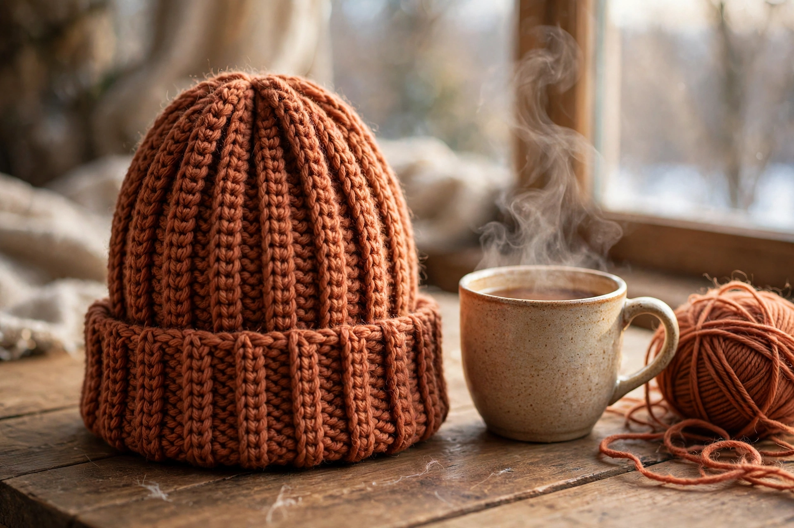
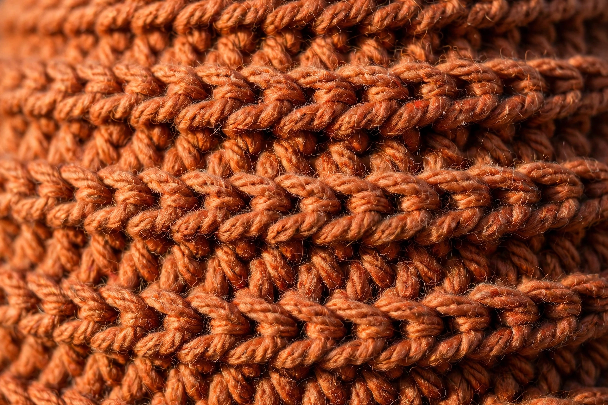
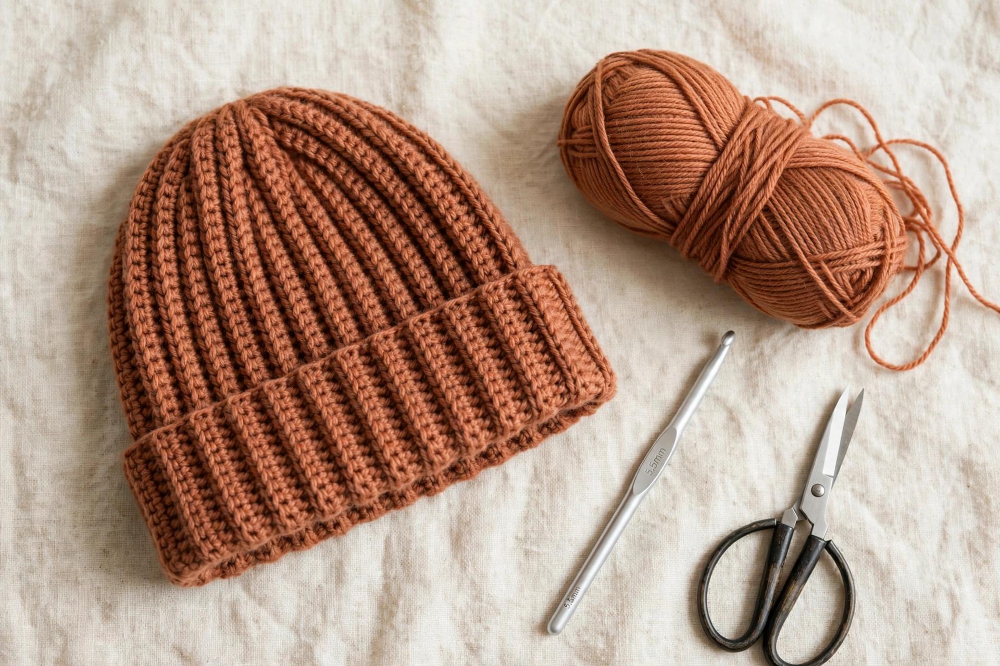

The Everyday Ribbed Beanie — Free Crochet Pattern
A beginner beanie you can finish in an evening. Worked flat in stretchy back-loop half-double crochet — no working in the round, no increases, no decreases. You crochet a rectangle, seam one side, cinch the top, and you're done.
This pattern is completely free — no account, no email signup, no attribution required. Make it, gift it, sell the finished beanies. It's yours.



Sizes
Ribbing stretches, so each hat is made about 2″ smaller than the head it fits. Pick your size, then follow its chain count and row count everywhere below.
| Size | Fits head | Finished size | Foundation chain | Rows | Worsted yarn |
|---|---|---|---|---|---|
| Toddler | 18–19″ | 16″ × 7.5″ | Ch 57 | 22 | ~140 yds |
| Child | 20–21″ | 18″ × 8″ | Ch 64 | 24 | ~170 yds |
| Adult M | 22–23″ | 20″ × 8.5″ | Ch 71 | 26 | ~200 yds |
| Adult L | 23–24″ | 21″ × 9″ | Ch 75 | 27 | ~225 yds |
| Size | Worsted (#4) | Bulky (#5) | DK (#3) |
|---|---|---|---|
| Toddler | ~140 yds | ~115 yds | ~160 yds |
| Child | ~170 yds | ~135 yds | ~190 yds |
| Adult M | ~200 yds | ~160 yds | ~225 yds |
| Adult L | ~225 yds | ~180 yds | ~255 yds |
Materials
- Yarn: worsted weight (#4) — see the yardage table below for exact amounts per size. One 200-yard skein covers Toddler through Adult M.
- Hook: US I-9 (5.5 mm), or the size needed to match gauge
- Yarn needle and scissors
- Optional: pom-pom, faux fur or yarn (about 25 extra yards if you make it from yarn)
Gauge
14 sts × 12 rows = 4″ × 4″ in half-double crochet, back-loop-only, blocked lightly. Check your gauge before you start: if your rectangle comes out wider than the finished size, go down a hook size; if narrower, go up.
Abbreviations (US terms)
ch — chain · hdc — half double crochet · blo — back loop only · st(s) — stitch(es)
Pattern notes
- The turning chain (ch 1) does not count as a stitch.
- Work every stitch in the back loop only — that's what creates the stretchy ribbing.
- Count your stitches at the end of Row 1. Every row after that has the same count.
Instructions
Foundation: Ch 57 (64, 71, 75).
Row 1: Hdc in the 2nd ch from the hook and in each ch across. — 56 (63, 70, 74) hdc. Count them.
Row 2: Ch 1, turn, hdc in the blo of each st across. — 56 (63, 70, 74) hdc.
Rows 3–22 (24, 26, 27): Repeat Row 2.
Your piece is now a ribbed rectangle measuring 16 (18, 20, 21)″ wide × 7.5 (8, 8.5, 9)″ tall.
Finishing
- Fold the rectangle in half with right sides together, bringing the two short ends together. Seam the short ends with a whipstitch (or slip-stitch through both layers). Fasten off, leaving a 12″ tail.
- Thread the tail onto your yarn needle. Weave it in and out along the entire top edge, going under one loop of every row-end. Pull tight to cinch the crown closed. Knot securely and weave in the end.
- Turn the hat right-side out and weave in the starting tail.
- Fold up a 2–3″ brim for the cuffed look. Sew on a pom-pom if you're using one.
Yardage, exactly
Estimates include a 10% safety buffer. For your exact yarn, check the label's yards per skein and run the numbers through the free yarn calculator — it tells you precisely how many skeins to buy.
Get your exact yardage
Run this pattern through the free calculator with your yarn's label details.
Frequently asked questions
How long does this beanie take to crochet?
About 2–3 hours for an adult size at a relaxed pace. The toddler size can be done in just over an hour — it's a true one-evening project.
Can I use a different yarn weight?
Yes. Match the gauge (14 sts × 12 rows = 4″ in hdc blo) by changing your hook size, and use the yarn calculator to get the exact yardage for your weight — bulky needs about 160 yards for an adult, DK about 225.
Do I need to block the beanie?
Not really. A light steam or a quick soak-and-dry will even out the stitches, but the ribbing looks great straight off the hook.
Can I sell beanies made from this pattern?
Yes. This pattern is completely free with no attribution required — make them, gift them, sell the finished beanies. No credit needed.